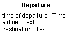

| 指南：设计类 |
 |
|
定义设计类表示系统实施中的一个或多个类的抽象；它所对应的准确内容取决于实施语言。例如，在诸如 C++ 的面向对象的语言中，类可以对应于一个普通的类。或在 Ada 中，类可以对应于包的可见部分中定义的已标记类型。 类定义对象，对象然后实现（实施）用例。类是从用例实现对系统中所需对象所作出的需求中以及从任何先前已开发的对象模型中产生的。 类的好坏很大程度上依赖于实施环境。类及其对象的正确大小取决于编程语言，例如，在使用 Ada 时认为是正确的内容可能在使用 Smalltalk 时是错误的。类应映射到实施语言中的特定的特殊现象上，并且应构造类以便映射产生良好的代码。 即使实施语言的特性影响了设计模型，您也必须保持类结构易于理解和修改。设计时就好象已具有了类和封装，即使实施语言不支持这一点也是如此。 操作其他对象访问或影响对象的属性或关系的唯一方法是通过其操作。对象的类定义了对象的操作。通过操作可以执行一个特定的行为，该行为可能影响对象保留的属性和关系并引起执行其他操作。在 C++ 中一个操作对应于一个成员函数，而在 Ada 中对应于一个函数或过程。分配给对象的行为依赖于该对象在用例实现中的角色。 参数在操作规范中，参数组成形参。每个参数都有一个名称和类型。可以使用实施语言语法和语义来指定各操作以及它们的参数，以便在开始编码时，已在实施语言中指定了它们。 示例： 在回收机器系统中，Receipt Basis 类的对象跟踪客户交来的某种类型的堆积物项的数量。Receipt Basis 对象的行为包括增加返回的对象的数量。操作 insertItem 接收对交来项的引用，以实现此目的。
指定操作时使用实施语言语法和语义。 类操作操作几乎总是表示对象行为。操作还可以表示类的行为，在此情况中它是类操作。可以在 UML 中通过规定操作类型范围对此建模。 操作可视性可以在操作上实现以下可视性：
应尽量少地使用公共可视性，仅在另一个类需要该操作时使用。 受保护可视性应为缺省值；它保护该操作使其不被外部类使用，防止行为的耦合和封装变得松散。 私有可视性应在您希望防止子类继承该操作的情况下使用。这提供了将子类从超类分离的方法，并减少了删除或排除未使用的继承操作的必要。 实施可视性具有最大的限制性；在只有类自身可以使用该操作的情况下使用。它是“私有”可视性的变体，适用于大多数情况。 状态对象可以根据其所处的状态，对特定消息作出不同的反应；关联状态表图定义了对象的依赖于状态的行为。对于对象可以进入的每个状态，状态表图描述它可以接收的消息、可以执行的操作以及之后该对象所处的状态。关于更多信息，请参阅技术：状态表图。 协作协作是一组动态的对象交互作用，在这些交互中一组对象通过彼此发送消息进行通信。在 Smalltalk 中发送消息非常直截了当；而在 Ada 中是作为子程序调用来完成的。消息发送到接收对象，接收对象调用该对象中的操作。消息指明了要执行的操作名称和所需参数。当发送消息时，将为所有参数提供实参（形式参数的值）。 在交互图中描述了用例实现中对象之间的消息传输以及调用操作后对象遵循的控制重点。关于这些图的信息，请参阅技术：时序图和技术：通信图。 属性是对象的一个命名的特征。属性名称是一个名词，它描述了与对象相关的该属性的角色。当创建对象时，属性可以有一个初始值。 仅当对属性建模可以使对象更易于理解时，才应这样做。仅当对象的特性是该对象本身的特性时，才应将对象特征建模为属性。否则，应使用到类（该类的对象表示了该属性）的关联或聚集关系来对属性建模。 示例：
如何对属性建模的示例。家庭的每个成员都有姓名和地址。这里，已标识属性我的姓名和家庭地址，其类型分别为姓名和地址：
在该示例中，使用关联而非属性。我的姓名属性可能对家庭中的每个成员都是唯一的。因此将它建模为属性类型为姓名的属性。地址由所有家庭成员共享，所以最好用家庭成员类和地址类之间的关联对它们进行建模。 并不总是很容易立即决定是将某概念建模为单独的对象，还是建模为另一个对象的属性。在对象模型中有不必要的对象将导致不必要的文档和开发开销。因此必须建立某些条件以确定某概念对系统的重要程度。
对不同的系统，可能以不同的方式对某概念建模。在一个系统中，某个概念可能非常重要，应将它建模为对象。在另一个系统中，它可能只是次要的，应将它建模为对象的属性。 示例： 例如，对于航空公司，将开发一套支持出发地的系统。  支持出发地的系统。假设机场的工作人员需要支持出发地的系统。对于每个出发地，您必须定义出发时间、航线和目的地。 可以将此内容建模为类出发地的对象，该类具有属性出发时间、航线和目的地。 但如果是为旅行社开发该系统，则情况可能会有所不同。
航班目的地组成它自己的对象目的地。 当然仍需要出发时间、航线和目的地。但还有其他需求，因为旅行社感兴趣的是对特定目的地查找出发地。因此必须为目的地创建一个单独的对象。当然，出发地和目的地的对象必须彼此知道对方，这可以通过这两个类之间的关联来实现。 某些概念的重要性的观点对确定应在类中定义哪些属性也是有效的。如果类汽车的对象是机动车登记系统的一部分，与该类的对象是汽车制造系统的一部分这种情况比较而言，无疑将定义不同的属性。 最后，将什么表示为对象以及将什么表示为属性的规则不是绝对的。 理论上，可将任何事物建模为对象，但这是很麻烦的。一个属于经验之谈的简单规则是将对象看成在某些场合以与其他对象无关的方式来使用的某种东西。另外，不需要使用属性对每个对象特性建模，仅对理解对象所需的特性建模即可。不应对过分特定于实施的详细信息建模，最好由实施者处理它们。 类属性一个属性几乎总是表示对象特性。属性还可以表示类特性，在此情况中它是一个类属性。可以在 UML 中通过规定属性类型范围对此建模。 使用属性对外部单元建模对象可以封装某些无须对象执行任何行为就可更改其值的内容。这些内容可能实际上是外部单元，但并没有被建模为一个参与者。例如，可能已选择系统边界，以便某种形式的传感器设备放置在它们中间。然后可以将传感器封装在对象中，以便它评估的值组成属性。然后该值可以连续地或以一定时间间隔更改，而系统中的任何其他对象不会影响该对象。 示例： 可以将温度计建模为一个对象；该对象具有表示温度的属性，并且作为对环境温度更改的响应更改值。其他对象可能通过对温度计对象执行操作，请求当前温度。
温度计对象中属性温度的值自发更改。 仍可以对封装值进行建模，它按照一般属性的方式进行变化，但您需要在对象的类中说明其变化是自发的。 属性可视性属性可视性假设以下值之一：
应尽量少地使用公共可视性，仅在另一个类可以直接访问该属性时使用。定义公共可视性实际上是将属性可视性定义为受保护、私有或实施的快速表示法，具有相关联的公共操作来获取和设置属性值。可以将公共属性可视性可用作对代码生成器的声明：应自动生成这些 get/set 操作，在类定义期间可省时。 受保护可视性应作为缺省值；它保护该属性不被外部类使用，这样防止行为的耦合和封装松散。 私有可视性应在为防止子类继承该属性的情况下使用。这提供了将子类从超类分离的方法，并减少了删除或排除未使用的继承属性的必要。 实施可视性最具限制性；在只有类自身可以使用该属性的情况下，使用这种可视性。它是“私有”可视性的变体，适用于大多数情况。 内部结构某些类可能表示复杂抽象并具有复杂的结构。在对类进行建模时，设计人员可能希望表示其内部参与元素以及它们的关系，以确保实施者将相应地实施在该类内部发生的协作。 在 UML 2.0 中，类被定义为结构化类，能够拥有内部结构和端口。然后，可以将类分解为已连接的部件的集合，之后还可以进一步分解这些部件。可以通过强制来自外部的通信通过遵守已声明接口的端口来封装类。 因此，除了使用类图来表示类关系（例如关联、组装和聚集）以及属性之外，设计者可能希望使用组合结构图。该图为设计者提供了一种机制，以显示内部部件的实例是如何在给定类的实例中扮演它们的角色的。 关于本主题的更多信息以及复合结构图的示例，请参阅概念：结构化类。 |

© Copyright IBM Corp. 1987, 2006. All Rights Reserved. |